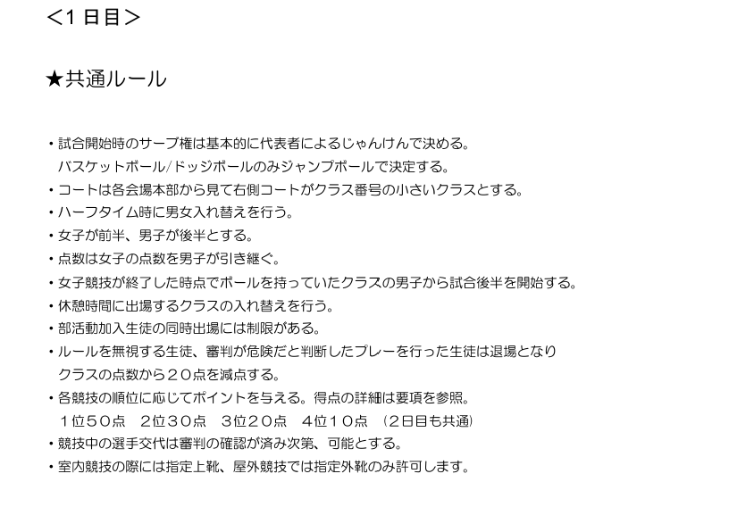

開催日:9月中旬
開催場所：ーー
担当:体育委員長
準備期間:2~3ヶ月前
準備は学校祭前から始めます。
体育科の担当教員と打ち合わせを行い、前年と変更する点を話し合います。
流れや競技に大きな変更がある場合は準備してから打ち合わせに臨みましょう。
打ち合わせ後、大会の流れや競技内容が確定したら要項等の作成に移りましょう。
学校祭明けの週には生徒に競技別名簿提出用を配布しましょう。
夏休み1週前くらいに締め切り、休み中に名簿等の作業ができる状態にしましょう。
準備するものは「要項/ルール/名簿/会場図/タイムテーブル/執行部用シフト」です。
休み中に講習のタイミング等で先生と何度か打ち合わせを行うようにしましょう。
体育科の先生に頼んで、休み中に部活動顧問の先生と擦り合わせを終えるようにしましょう。
休みが明けるまでには「資料類」が完成しているようにしましょう。
休みが明けたらすぐに体育委員会を招集し、資料の配布と説明をしましょう。
この時点で部活動に依頼をしましょう。
基本的に審判は部活動生徒が行います。
審判にもシフト作成が必要です。執行部で作成すると楽です。
選手宣誓の生徒にも依頼しましょう。誰でも可能ですが例年は学校祭MCです。
Classroomの作成もここあたりで行いましょう。
テスト期間が近づくため、委員や部活動生徒への連絡は早めに終わらせましょう。
その後はルールをもとに執行部会議を行い、綿密に確認しましょう。
どの行事にも通じますが執行部で確認を怠ると失敗につながります。
しつこいくらいに確認をしましょう。
研修生も働くことになると思うのでテスト明けくらいに説明しましょう。
前日の放課後に本部の設営を行います。
屋外テント本部は倒壊の恐れがあるため、縮小状態で設営します。
屋内本部は長机を会議室から運び、体育館のパイプ椅子を設置します。
本部には「要項/ルール/時程/競技別名簿/変更用名簿/結果記録」を置きます。
名簿変更に関しては後述します。
渡り廊下にはトーナメント票を張りましょう。
競技に必要な備品は準備を済ませましょう。
以下のリストは体育科から借用が必要な備品なので確認してください。
コート設営は当日朝に部活動生徒にお願いしましょう。
体育館で行う朝練（バド部等）は8時前には撤収してもらいます。
執行部は7時30分頃から屋外本部の設営/屋内本部の確認を行いましょう。
当日の流れは以下の通りです。
上述にあるように委員生徒/部活生徒/執行部で朝の準備を行います。朝SHRが始まる8:25までに余裕をもって終わるように行動しましょう。
例年放送で行います。一般生徒はHR教室から参加、放送室も最低人数で進行します。
体育委員長/会長/校長/体育科教員/宣誓生徒だけでいいでしょう。
各年次ごとに競技場所に移動し、時程に従って競技を行います。
執行部はシフトに従い進行しましょう。
シフトの作成方法は後述します。
競技は基本的に時程通りには進みません。
大幅に押す可能性が十分にあるということを頭に入れて、巻けるところは巻きましょう。
委員長と教員で判断して時程の変更を行う場合は、放送とClassroomで連絡しましょう。
競技別のルールは後述します。
1日目が終了後に、屋外本部の縮小と2日目に使用しない本部の片付けを行います。
放課後には部活動があるので急いで片付けを進めましょう。
片付けがある程度終了したら、2日目の準備に移りましょう。
長机はそのままですが、資料類を更新しましょう。
1日目終了後に出た反省点と改善策を放課後に執行部内で連絡しましょう。
必要であればClassroomで全校を対象に連絡しましょう。
片付け/準備と並行して落とし物の連絡を行いましょう。
落とし物に関する細かい資料は"過去資料"とshare内にあるので確認しましょう。
1日目朝と同様に屋外と屋内の本部設営/最終確認を行いましょう。
2日目は開会式がないのでSHR終了後に放送で移動の指示を出しましょう。
午前中は1日目に引き続き、年次ごとに競技を進行しましょう。
午前競技が終了後に全年次に休憩時間を設けましょう。
執行部はこの間に午後競技の準備を行います。
昼休み終了後、放送で移動指示を行います。
グラウンドで各年次ごとに決められた観戦場所へ移動してもらいます。
1年次から順に競技を行い、時程に従って協議を進行します。
全体競技中に順位が決定次第、賞状の印刷を行います。
閉会式で表彰を行うのは総合順位のみです。
競技別順位は後日発表し、賞状をHRに配布します。
体育大会の全工程が終了したので、使用した備品等をもとの状態に復旧します。
委員生徒/執行部で分担し部活動に支障がないようにしましょう。
当日は時間通りに進まないです。
事前に担当の教員と打ち合わせを行いましょう。
打ち合わせでは時間が押した場合にどこから削るかを決めます。
1.休憩時間を削る。
2.試合時間を短縮する。 等です
全体
| 備品名 | 個数 |
|---|---|
陸上
| 備品名 | 個数 |
|---|---|
サッカー
| 備品名 | 個数 |
|---|---|
バレーボール
| 備品名 | 個数 |
|---|---|
バスケ
| 備品名 | 個数 |
|---|---|
卓球
| 備品名 | 個数 |
|---|---|
備品の中には学校で扱っていないため
本校近くの「北広島市総合体育館」から借用するものがあります。
借用の方法は
1.借用備品を取り扱っているか、電話(011-372-0808)で確認する。
2.担当の先生から総体に依頼をお願いする。
3.日付を決定し、委員長ほか複数名で借用備品の受け取りを行う。
過去に行った競技のルールを掲載するので、参考までに目を通してください。



夏休み前に各HRから競技別名簿を提出してもらいます。
例年は紙媒体で回収してますが、データで提出してもらうと非常に楽です。
どの方法をとっても名簿登録のルールは変わらず
①Google Spread sheet
以下の手順で名簿を回収します。
ここに作成例
②Google Form
以下の手順で名簿を回収します。
ここに作成例とリンク
名簿提出後の変更に関してですが、基本的には受け付けません。
けがや部活動の大会等で仕方なく出場できない場合は以下の手順を取ります。
〇登録生徒で競技出場人数を満たす場合→変更なし
〇満たさない場合→出場回数に気を付けて補充を認める。
※当日に変更がある場合も同様の手順を取りますが、
自由に変更すると収拾がつかなくなるので担当生徒を決めましょう。